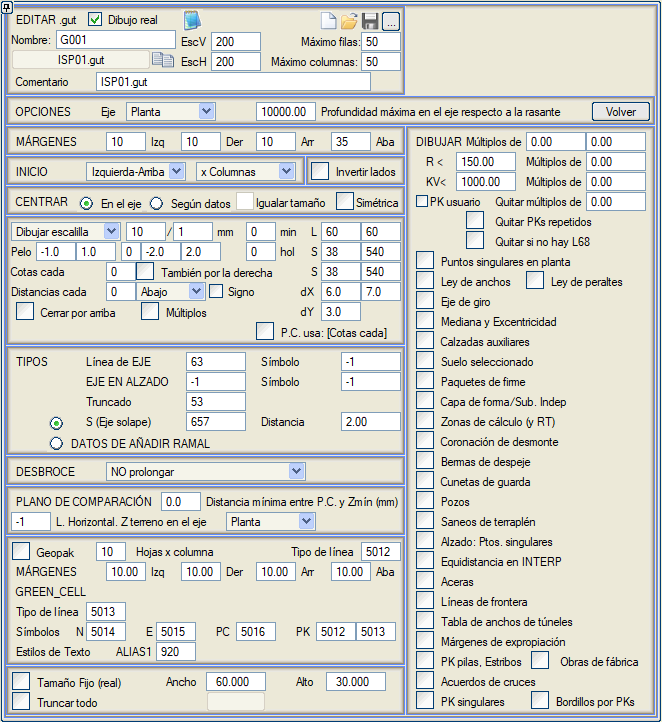
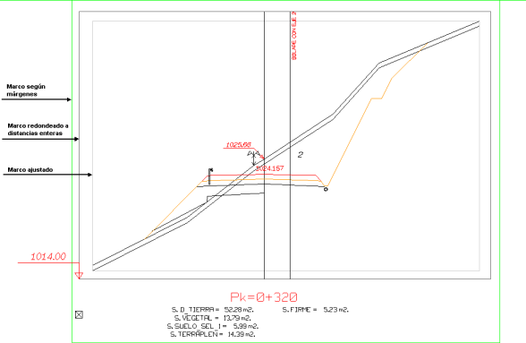
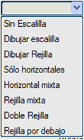
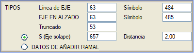
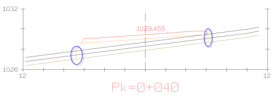

| |
|
ENKESİT PAFTALARI İÇİN ŞABLONLAR: SEÇENEKLER
|
Buradan, enkesit paftalarının oluşturulma şeklini etkileyen çeşitli ayarlar yapılandırılır. 
Seçenekler Plan/Kesit Ekseni: Yatay mesafeler ekseninin başlangıcını, plan ekseniyle veya kesit ekseniyle çakışacak şekilde ayarlar. Eksende kırmızı kota göre maksimum derinlik: Kırmızı kot ile eksendeki bir yüzeyin kotu arasındaki kot farkı sınırını belirler. Kot farkı burada belirtilenden daha büyük olan yüzeyler çizilmez. Kenar Boşlukları Bu bölümde, her enkesite verilen yan kenar boşlukları ayarlanır. Aşağıdaki şekilde görülebileceği gibi, her enkesit, şablon tasarım modunda üç farklı dikdörtgenle çerçevelenmiş olarak görünür. İçteki, verilere tam olarak uyar, ortadaki, eksene olan tam sayı mesafelerine yukarı yuvarlanmıştır ve dıştaki (yeşil), iç çerçeveden ölçülen kullanıcı kenar boşluklarına karşılık gelir. Bunun için, sol, sağ, üst ve alt kenar boşluklarına karşılık gelen dört mesafe verilir. 
Başlangıç Her sayfa için enkesitlerin başlangıcı, kullanıcı tercihlerine göre sol-üstten, sol-alttan, sağ-üstten, sağ-alttan ayarlanabilir, böylece sayfa başına KM ilerlemesi sırasıyla üst kısımdan veya üst kısıma doğru ve sırasıyla soldan sağa doğru olacaktır. Ayrıca Sütunlara göre veya Satırlara göre seçilebilir. Bitişikteki başka bir seçenek, profilin taraflarını ters çevirmemize olanak tanır. Ortala Eksende / verilere göre: enkesitin gösterimini eksene (matematiksel olana, geometrik olana değil, dolayısıyla eksantriklikleri dikkate alarak) veya tüm enkesite (verilere göre) göre ortalar. İlk durumda, tüm enkesitlerin eksen gösterimi her sütunda hizalanmış olacaktır. Boyutu eşitle: eğer enkesitler verilere göre ortalanırsa, aynı paftadaki tüm enkesitlerin aynı boyutta bir kutuya sahip olmasını zorlamak için bu kutucuk etkinleştirilebilir. Simetrik: Hem enkesit altındaki verilerin hem de gridin, uzun tarafı referans alarak plan ekseninin her iki tarafında aynı boyutta olmasını zorlar. Grid / Kılavuz Çizgiler Grid tipi: konulmak istenen grid tipini yapılandırır.
min: minimum dikey bölüm sayısı. pay: dikey bölüm sayısını genişletmek için boşluk payı. Ç: iki çizgi tipi için iki metin kutusu. Birincisi gridin kenarında kullanılır (varsayılan L60) ve ikincisi gridde / işaretlerde / yatay çizgilerde kullanılır. S: iki sembol için iki metin kutusu. Birincisi tam sayı değerlerini etiketlemek için kullanılır (varsayılan S38) ve ikincisi ondalıklı değerler için (varsayılan S540, 2 ondalıkla etiketler). dX: kotların gridin dikey eksenine olan ayrımını tanımlamak için iki metin kutusu: ilki tam sayı kotlar için ve ikincisi ondalıklı kotlar için. dY: mesafelerin gridin yatay eksenine olan ayrımını tanımlar.. Kıl: gridin işaretlendiği "kıl çizgilerinin" uzantısını tanımlar. İki metin kutusu, dış (negatif olarak) ve iç (pozitif olarak) kısmın uzunluğunu tanımlar. Ayrıca her n kıl çizgisinde bir daha büyük bir kıl çizgisi çizmeye de izin verilir. Kotlar her: her kaç "kıl çizgisinde" bir kotun (dikey eksende) etiketleneceğini tanımlar. Sağda da: bu seçenek etkinken, kotlar gridin/gridin sağında da etiketlenir. Mesafeler her: her kaç "kıl çizgisinde" bir eksene olan mesafenin (yatay eksende) etiketleneceğini tanımlar. Bitişikteki seçim kutusuyla bu yatay eksenin altta, üstte veya her ikisinde de etiketlenmesini isteyip istemediğimizi seçeriz. İşaret: eksene olan mesafelerin işaretiyle etiketlenmesini sağlar. Üstten kapat: çerçevenin üst kenarını da çizer. Katlar: tüm enkesitlerin gridlerini, çizgiler arasındaki mesafenin katı olan bir koordinata yerleştirir, böylece tüm gridler tek bir gridin parçası olabilir. K.D. kullanır: karşılaştırma düzleminin konumunu ve gridin sınırlarını, Kotlar her değerinde belirlenen derecelendirmeye uymaya zorlar. Tipler Çeşitli elemanların çizileceği çizgi ve/veya sembol tiplerini belirler: eksen çizgisi, boykesitteki eksen ve diğer eksenlerle çakışma (kırpılmış). Bu ikinci durum için (sınır çizgileriyle kırpılmış eksenlerden gelen) ayrıca iki etiketleme olasılığı vardır: bununla çakışan bir ekseni etiketleyen bir sembol veya BRANŞ EKLEME VERİLERİ ile etiketler. Plan ekseni çizgisinin altına bir sembol ekleme imkanı. Ayrıca, aplikasyon ekseninin konumunu boykesitte başka bir çizgiyle temsil etmek için bir tip ve bu çizginin altına başka bir sembol tanımlamaya da izin verilir. (IS1per_A4.gut/S104_yatay). 
Bitki Toprağı Sıyrılması Seçebileceğimiz seçenekler şunlardır:
 Eğer çizgiyi uzatmayı seçerseniz, dolgu, etekten sağlam araziye kadar dikey olarak uzatılır, bu da bitki toprağı sıyrılmasına karşılık gelen metrajı grafiksel olarak somutlaştırır. Yarmada, çizgi, sağlam araziyle kesişene kadar dikey olarak uzatılır. Karşılaştırma Düzlemi K.D. ile Zmin arası min. mesafe (mm): karşılaştırma düzlemi ile enkesitin en düşük kotu arasında olacak minimum mesafeyi belirler. Yatay Çizgi. Eksende arazi Z: eksendeki arazi kotunda yatay bir çizginin çizileceği çizgi tipini belirtir. Sabit Boyut Sabit Boyut (gerçek) kutucuğunu etkinleştirerek, tüm enkesit kutuları için, gerçek metre cinsinden genişlik ve yükseklik olarak tanımlanmış sabit bir boyut tanımlama imkanımız olacaktır. Tümünü Kırp Tümünü Kırp kutucuğu etkinleştirildiğinde, eksene olan mesafesi belirtilen değerden büyük olan yüzeyler ve semboller kaldırılır. Çizilecek Enkesitler Diyalog kutusunun sağ sütunu, hangi enkesitlerin çizileceğini belirtmek için ayrılmıştır. ... katları: Eğer bu kutucuklarda 0 değeri bırakılırsa, o zaman .per dosyasındaki tüm enkesitler gösterilir. Aksi takdirde, sadece girilen değerin katları çizilecektir. Bu katlar, Yarıçapları ve KV'leri için bir maksimum değerle sınırlayarak kurplarda ve düşey kurp bölgelerinde uyarlanabilir. ... katlarını kaldır: girilen değerin katı olan KM'lere karşılık gelen enkesitlerin çizilmesini engeller. Bu, örneğin, bir .per dosyasının sadece karakteristik KM'lerindeki enkesitleri göstermek istendiğinde yararlı olabilir. Tekrarlanan KM'leri kaldır: tekrarlanan km'li enkesitleri kaldırır. L68 yoksa kaldır: [İptal 2] etkinleştirilen hesaplama aralıklarındaki enkesitlerin çizimini engeller. Gösterilmesi istenen özel enkesitlerin (örneğin, yatay güzergahın karakteristik noktalarına, genişlik veya dever kanunundaki değişiklik noktalarına, sanat yapılarının kesişim noktalarına vb. karşılık gelenler) kutucukları işaretlenmelidir. |